基本配置
语言
目前支持的语言列表：
- en: English
- zh-cn: 简体中文
- zh-tw: 繁體中文
- es: Español (西班牙语)
- fr: Français (法语)
- de: Deutsch (德语)
- ja: 日本語 (日语)
- ru: Русский (俄语)
- ko: 한국어 (韩语)
注意： 只有中文简体繁体和英语是作者翻译，其他的语言都是由AI进行翻译得到的.
顶部菜单栏
menu:
XXX:
path: /
ico: ico-name
XXX:
path: /XXX
ico: ico-name
submenu:
XXX:
path:
ico:
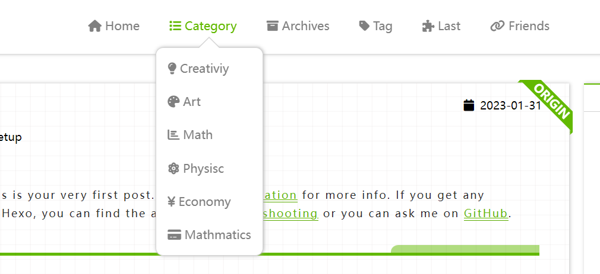
ico-name是图标在Font Awesome里面的图标的名称-
path是你想让图标链接到的地址 -
submenu是二级标题
博客简介
Logo
# by using image or svg
logo:
on: true
url: /img/o_oyao.svg

如果开启logo，将使用图片或者svg图片来替代左上角的site name
头像
avatar: https://
写出头像在云端存储的连接
个人简短介绍
aboutme: XXX
简短的个人介绍，在文章页面的侧边栏里展示
打赏功能
donate:
on: true # false
methods:
- name: wechat
enabled: false
description: WeChat
qrCode: /img/wechat.jpg
- name: alipay
enabled: true
description: Alipay
qrCode: /img/alipay.jpg
- name: zelle
enabled: true
description: Zelle®
qrCode: /img/zelle.jpg
defaultMethod: zelle
description: Like my post?
直接把二维码放在hexo-theme-last/source/img/下面，命名为wechat.jpg ，zelle.jpg和alipay.jpg
预览


成立日期
since: 2019
联系信息
contacts:
E-mail: " mailto:o_oyao@outlook.com || fas fa-fw fa-envelope"
...
# 微博: " ||fab fa-fw fa-weibo"
Twitter: " ||fab fa-fw fa-twitter"
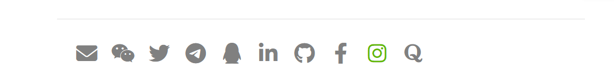
- 在每个页面底部展示联系信息
- 使用font awesome图标
添加新的图标
格式：XXX: "url_for(XXX)||icon name of XXX"
url_for(XXX)：这里的是图标对应的连接icon name of XXX：是font awesome里面的图标的<i class="XXX"></i>标签里面class的全部内容
首页样式
文章列表样式

每篇文章的配图可以自定义也可以使用默认配图。
自定义配图
---
title:
date:
tags:
postImage: https://s1.ax1x.com/2020/09/23/wX2BfU.jpg
description: XXXX
---
在每篇md文件的头部添加配置
postImage: 是自定义配图存储的位置desscription: 是文章内容的简介，用于首页展示
默认文章封面
PostDefaultImage: https://s1.ax1x.com/2020/04/25/J6iz9K.jpg
没有给md文件配置postImage的，会默认使用_config中的配置
大图展示
homeCover:
fixed: true
url: https://
首页的图是否是固定的，不随着滑动而向上移动
首页的轮播图
首页的轮播图由每篇文章的配图以及介绍组成。想设置轮播图需要先选出希望轮播的内容。
在要轮播的文章的md文件头部添加信息
---
title:
date:
tags:
isCarousel: true
---
carousel:
on: true
prevNext: true
indicators:
on: true
position: center # left, center, right
style: line # dot, line
currentColor:
color: "#222"
opacity: 0.9
otherColor:
color: "white"
opacity: 1
mask:
on: true
color: "#000"
opacity: 0.5
blur:
on: true
px: 5
textColor: "#fff"

preveNext: 是否开启两侧的箭头标志
indicators：图片下面的指示器
-
position：指示器的位置，有左、中、右三种 -
style：指示器的形状，有长条，圆点两种 -
currentColor：当前图片，指示器的颜色 -
otherColor：没轮到的指示器的颜色
mask: 背景图片阴影 蒙版
color：阴影的颜色，可以时任意的十六进制颜色表示，或者颜色名字opacity：透明度（0-1）之间的小数
blur：背景图片模糊程度，px数字表示模糊的程度的像素量化
textColor：图片上文字的颜色
文章列表样式
clampLines: 8
clampLines 是首页每篇文章的描述内容展示多少行，是一个整数数字
文章排版
homeRowMaxItem: 6 ## 3-6
文章页面
字数统计
wordCount: false
需要安装插件hexo-wordcount
npm install hexo-wordcount
内容过期提醒
Warning:
on: true
Days: 200
Content: "This article was written {} days ago. The content of the article may be out of date."
在文章前面显示

- 如果在
warning.on上打开，则每篇文章都自带提醒 - 还可以在每篇文章的
md文件里添加Warning: true来打开文章的过期提醒 Days是过期的天数限制Content里面的{}，就是Days的数值，剩下的文字都可以任意修改。
页面的样式
postStyle:
authorInfoPosition: right
contentStyle: github
color: "default"
codeStyle:
style: mac # mac, tab
colorSet: sakura-light # sakura, sakura-light
# dark style or light style. This is only applied to styles not colorSet
light: true # false, true
-
authorInfoPosition：是目录和个人简介头像的位置，有左、右两个位置

-
contentStyle：文章页面的样式选项
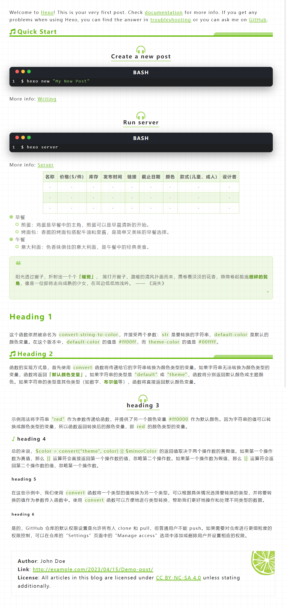

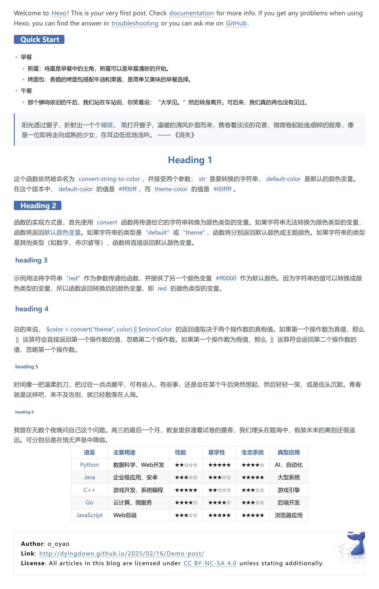

-
color：文章页面的主题颜色- 默认就是
default - 还可以填入颜色的名字，是在
css里面可用的颜色名字 - 可以填入
#XXXXXX，以#开头的以十六进制的颜色
- 默认就是
-
codeStyle: 代码块样式- style: 代码块的样式
- colorSet: 代码颜色主题
- light: 是不是浅色


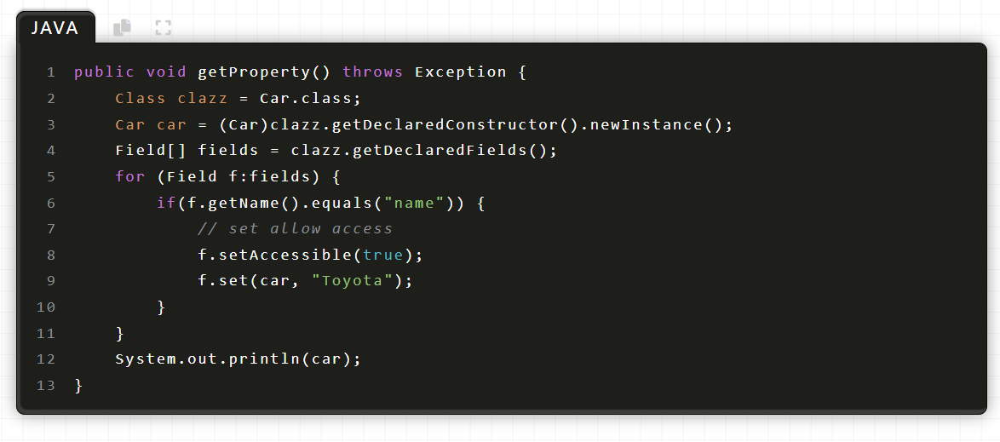
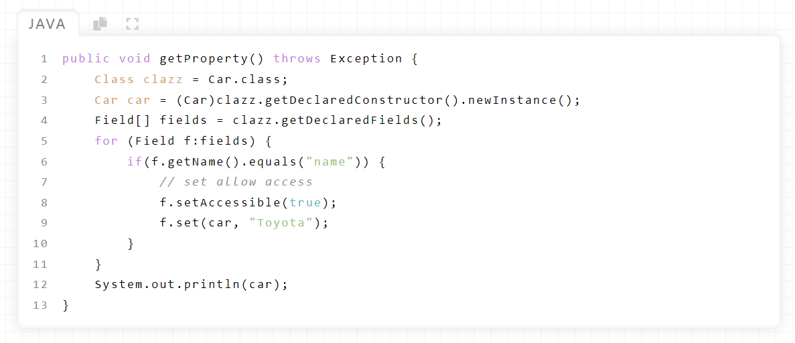
注意：hexo渲染Todo list可能会不成功: 可能解决办法 点击查看
版权信息
copyright:
on: true
simple: false
license: "CC BY-NC-SA 4.0"
fullName: "Attribution-NonCommercial-ShareAlike 4.0 International"
url: "https://creativecommons.org/licenses/by-nc-sa/4.0/"
icon: "creative-commons"
simple标签表示版权的两种样式license是license的短名字fullNamelicense的全名url该license的URL链接icon该license的font awesome 的 icon名称
其中复杂样式里面的图案，可替换/img/license-decoration.png 图案，达到自定义的效果。

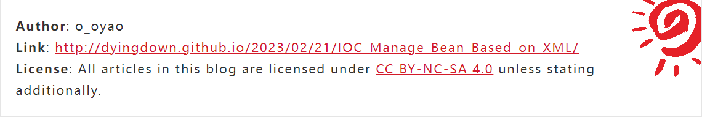
Paginator分页
多文章分页
paginationNumberBackground: true

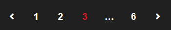
单文章分页
postPagePaginationStyle: card # normal picture card

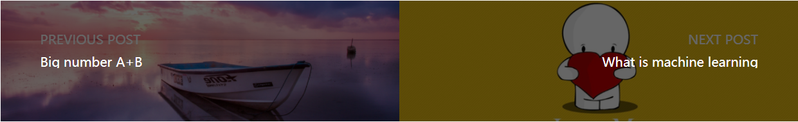
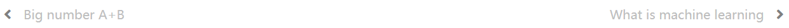
滚动
回到顶部
SideButtons:
style: "both" # "icon", word", "both"
Top:
on: true
color: "#e37a90" # "#e37a90" hex color
Comment:
on: true
color: "#33a6dc" # "#33a6dc" hex color
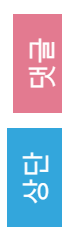

Top表示回到顶部，Comment表示到评论区。如果评论功能未开启，则默认不展示该按钮
滚动条
ScrollBar:
style: "bicolor" # "bicolor", "simple", "gradient"
color: "theme" # "default" "theme" "#459798"
shape: "square" # "square", "round"
gradient:
color1: "skyblue"
color2: "purple"
- 滚动条有三种样式
color: 可以自定义滚动条颜色，或者使用"theme"就跟随主题的颜色shape: 滚动条形状，圆角或者方形gradient: 滚动条会从color1渐变到color2


消息弹窗
alertStyle:
colorBackground: false # false will use page's background
position: right # right, center, left
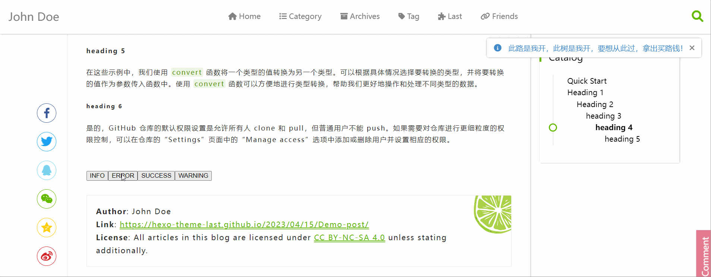

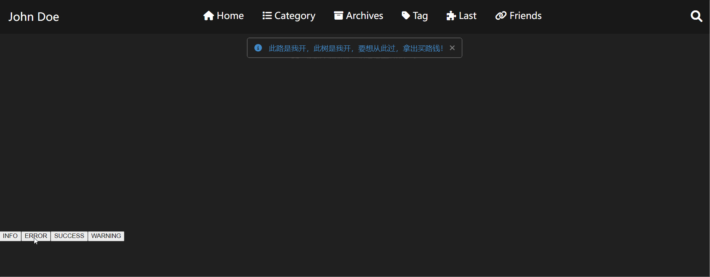